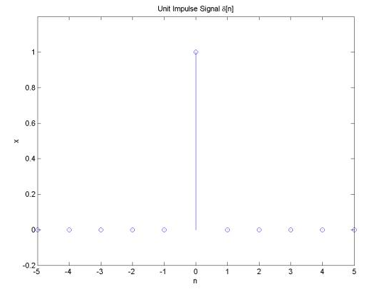
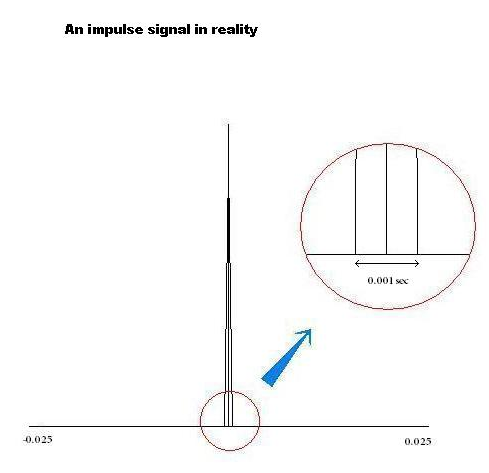
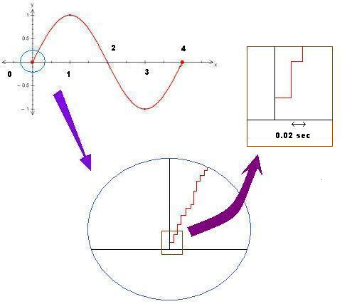

Is the Universe Digital or Analog?
by admin | Jan 18, 2019 | blog
Is the world digital or analog? Well, first of all, let me make clear to the readers on what this question means. Though most of you reading this already know what this question means, I would like to through some light on the meaning of this question for the sake of those who can’t understand. We know that the fundamental constituents of this universe are matter and energy. Anything tangible will either be matter or energy. For instance, water is a matter in liquid state. The radio wave that our mobiles receive is energy. It was Albert Einstein’s ground breaking equation, E=mc2 that showed us that all matter is also made up of energy. This means that everything tangible in the universe is energy. Anything matter is just a manifestation of energy at an ultra high speed. The speed is so high that it is not humanly perceivable to feel it as energy. A lot of resource is available about that topic in the internet and in YouTube. The question is whether the smallest known constituent of the tangible universe is digital or analog. Digital is something countable. The number of electrons in an atom is countable. The objects being counted are discrete. It can be digitized. Analog is something which not discrete. It cannot be digitized naturally. For example, the volume of air in a closed bottle is measurable, but it is not discrete, that it cannot be counted. It is because it is not digitized. Thus meaning of the question “Is the universe digital or analog?” is whether the smallest constituent of the tangible universe digital or analog.
I googled this topic and found just one relevant article in the below link:http://www.st-andrews.ac.uk/~www_pa/Scots_Guide/iandm/part12/page1.html
I did not search meticulously, so anyone patiently wading through the Internet may find lots of relevant articles on this topic.
To proceed further, it would be good to summarize the content of the above article in a gist. According to the author, both “digital” and “analog” are mere idealizations of a real physical quantity. That is, in the real world it is impossible to term any quantity as “digital” or “analog”. I personally agree with that notion.
The concept of idealization of the above terms can be explained by considering a simple electrical impulse signal. In theory, an impulse signal is one which has no time duration. Mathematically, the time duration of the impulse signal tends to zero. This is practically impossible. That is, the impulse signal has finite time duration. When zoomed in time scale, we can see that the impulse signal has a finite time duration that is very small compared to the rest of the signal’s time duration in that particular system. An example is given below to illustrate. Consider a typical impulse signal in real world with practically zero time duration as shown below. Its time duration appears to be zero when observed from the below graph.

When zoomed in, the impulse signal has an observable finite time duration. In this case the impulse signal has time duration of 0.001 seconds. This time duration is negligible when compared to time duration of one second, therefore in a system where the smallest unit for an electrical signal is one second, a typical impulse signal will have a time duration of 0.001 seconds.

The zoomed in impulse signal can again be considered as a half cycle of a sine wave with very high amplitude.
On the other hand, a sine wave when taken and analyzed by zooming into its amplitude versus time graph, its variation can be digitized. That means, the smallest change in the amplitude with respect to time can be counted if the unit taken to measure that amplitude is small enough.
Thus, the concept of “digital and analog” is mere idealizations. There is no absolute digital or analog signal in real world.
Matter exists in the smallest stable form in reality as quarks. Quarks are the building unit of protons and neutrons, which make up an atom. A particle smaller than quark which can exists in real world is not yet been found. Researchers believe the answer can be found if experiments conducted at L.C.H. (Large Hadron Collider) in Geneva is successful. On the other hand, hypothetically, a particle can exist in nature smaller than a quark. For that reason, hypothetically, a particle can exist in nature smaller than the smallest particle that can ever be found by man.
As said in the beginning of this article, it was established by modern science that all matter is a stable manifestation of energy. The smallest unit of energy that has been defined by contemporary science is a “photon”. The energy of a photon is 4 x 10-19 joule. Again, hypothetically, there can be a smaller unit of energy than the smallest unit of energy that can ever be found by man.
Thus one intelligent and acceptable way to define what is “digital” and “analog” is by stating that any amount of matter or energy as “digital” if it can be expressed as a whole number sum of smallest unit of matter or energy. For example, since the smallest unit of energy is photon, so if a measured amount of radiation has the smallest variation as one photon, it can be considered a “digital” reading or “digital” variation. A set of five readings of a particular radiation measurement in unit of photons is as follows: 5, 8, 12, 7, and 10. Here the readings or variation can be termed “digital”. If the readings are 8.6, 7.3 and 4.1 and so on, then the reading or variation can be termed “analog”.
To put it more simply, it depends upon the unit that we assume to quantize a given physical quantity with respect to another physical quantity. For instance, if the electrical amplitude is changes within the smallest time duration defined for that system, it is an analog system. If the amplitude does not vary within the smallest time duration defined for that system, it is a digital system. Thus an analog system can be converted into a digital system by reducing the unit of time duration small enough. A digital system can be converted into an analog system by increasing the unit of time duration.
This can be easily explained with the below example. Consider a sine wave with time duration of 4 seconds. It means it takes 4 seconds to complete one cycle or oscillation. This sine wave is an analog signal because it varies smoothly with time. The smallest unit of time defined is one second in the graph and since the amplitude is not constant in the smallest duration of time(1 sec), the signal is defined as analog signal. If the same signal is zoomed in and if observed in very small time duration, the variation becomes constant over small duration of time. If the time duration considered is small enough, and if that time duration is made the unit of the graph, the signal becomes a digital signal. In this case if the signal is zoomed enough and a very small time duration of 0.02 second is taken as the unit, then the signal becomes a digital signal. This is because when 0.02sec is taken as the unit, then the amplitude variation within that time duration through the graph becomes constant.

It should be understood that the concept of digital and analog are idealizations, but once a system has been characterized and predefined in a particular manner, adhering to that specifications is considered the best.
To answer the question asked first “Is the world digital or analog?” is now quite easy. The world is neither analog nor digital. The real world exists in such an intricate form that it is both analog and digital at the same time or it is neither analog nor digital. “Analog” and “Digital” are mere concepts of idealizations for our convenience.